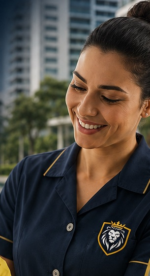

Elevamos o padrão do seu condomínio ou empresa com mão de obra qualificada, gestão transparente e equipamentos de alta performance.
Falar com EspecialistaMais do que mão de obra: entregamos gestão completa e tranquilidade operacional.
Transformamos áreas verdes em cartões de visita. Realizamos poda técnica, adubação, controle de pragas e projetos paisagísticos que valorizam o patrimônio.
Ambientes impecáveis transmitem profissionalismo. Nossas equipes seguem protocolos rigorosos de higienização, utilizando produtos e maquinários específicos.
Tratamento especializado para pisos e pedras em áreas de piscina. Removemos manchas e sujidades profundas, garantindo a segurança antiderrapante e a valorização da sua área de lazer.
Monitoramento preventivo e constante. Nossas equipes de ronda realizam inspeções periódicas no perímetro, garantindo resposta rápida e maior sensação de segurança.
Suporte essencial para a gestão. Fornecemos profissionais capacitados para auxílio em rotinas de escritório, atendimento e organização documental de condomínios e empresas.
Controle de acesso rigoroso e cordialidade. Nossos porteiros são treinados para identificar visitantes, receber encomendas e garantir que apenas pessoas autorizadas circulem no local.
Compromisso com a técnica e a eficiência. A L2 Terceirização Facilities Ltda não apenas fornece mão de obra; nós assumimos a responsabilidade pela operação do dia a dia. Nosso objetivo é eliminar a burocracia da gestão de funcionários para que você foque no crescimento do seu negócio.
Investimos pesado na capacitação contínua. Nossos jardineiros, auxiliares e porteiros passam por treinamentos periódicos e utilizam Equipamentos de Proteção Individual (EPIs) e maquinário próprio de última geração, garantindo segurança e agilidade.
Atuamos em Cuiabá e região com um modelo de supervisão ativa. Não esperamos o problema acontecer: nossos gestores visitam os postos frequentemente para garantir que o padrão de qualidade L2 seja mantido rigorosamente.

Pilares que sustentam nossa credibilidade no mercado:
Não enviamos qualquer pessoa. Checamos antecedentes, referências e realizamos testes técnicos antes de integrar um colaborador à nossa equipe.
Você não fica desamparado. Nossos supervisores acompanham a execução dos serviços 'in loco' e mantêm canal direto com o contratante.
Possuímos frota e maquinário completo (roçadeiras, sopradores, lavadoras). Não dependemos de aluguel, o que evita atrasos.
Veja a qualidade técnica e a padronização das nossas equipes em ação.
A L2 assume a operação do seu condomínio ou empresa de ponta a ponta:

e receba uma proposta personalizada.
Tenha uma equipe de alta performance no seu empreendimento.